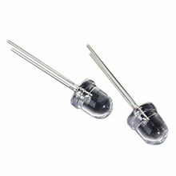

ИК-светодиод F5 940 нм 5 мм, прозрачный
Излучатели (LED, дисплеи)ИК-светодиод 5 мм с излучением на длине волны 940 нм для передачи инфракрасного света, обычно в пультах, датчиках и простых ИК-передатчиках.
Это стандартный инфракрасный светодиод в корпусе 5 мм (T-1 3/4) с прозрачной линзой, предназначенный для излучения невидимого ИК-света около 940 нм. Такие светодиоды часто используют в пультах дистанционного управления, ИК-барьерах, простых передатчиках и самодельных устройствах управления. Для этой позиции наиболее близкое каноническое семейство — TSAL6200 от Vishay, так как оно соответствует 5 мм корпусу и пику излучения 940 нм. Прозрачный корпус не означает видимый свет: это именно ИК-излучатель, а не приемник. При подключении нужен ограничительный резистор, а допустимый ток зависит от конкретной модели и режима работы.